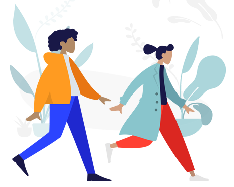

MASYARAKAT UMUM

- Banyak negara telah terkena dampak COVID-19, jadi jangan melekatkan COVID-19 pada etnis mapun bangsa tertentu.
- Jangan memberikan stigma kepada pasien COVID-19 dan keluarga
- Kurangi menonton, membaca, atau mendengarkan berita yang menyebabkan Anda merasa cemas atau tertekan. Cari informasi hanya dari sumber terpercaya.
- Lindungi diri Anda dan beri dukungan terhadap sesama, seperti cek tetangga Anda melalui telepon atau orang-orang di sekitar lingkungan Anda yang mungkin memerlukan bantuan.
- Fokus pada cerita positif dan penuh harapan, serta citra positif dari orang yang telah mengalami COVID-19. Misalnya, kisah orang yang telah sembuh atau perjuangan seseorang yang mendukung orang lain yang terdampak COVID-19. Usahakan tidak menyebutkan nama orang terdampak.
- Hargai dan dukunglah perjuangan petugas sebagai garda kesehatan terdepan dalam membantu orang yang terdampak COVID-19. Mereka sama seperti semua orang lain, bisa tertekan dan cemas dalam menghadapi kasus ini. Usahakan mengurangi beban mereka dengan menyampaikan pernyataan yang mendukung dan berikan penghargaan yang sesuai.